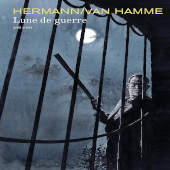

Hermann Huppen
Biography
 Hermann Huppen, who signs with solely his first name, is one of the most popular Belgian artists. He took evening art courses at the Saint-Gilles in Brussels, and started out working as an interior designer, participating in the Expo 58, among other projects. He also worked in Montreal and New York for a short period. It was his brother-in-law Philippe Vandooren (the future editor-in-chief of Spirou) who introduced him to the field of comics. Vandooren assigned him to do a short story for the boyscout magazine Plein-Feu, of which he was the editor at the time. By 1964, Hermann joined the art studios of Michel Greg. During the same period, he illustrated some stories in the series 'Les Belles Histoires de l'Oncle Paul' for Spirou magazine.
With Greg as his scenarist, Hermann broke through with the adventure series 'Bernard Prince' in Tintin in 1966. While continuing this series, he also did some independent stories, as well as the first episodes of the 'Jugurtha' series (written by Jean-Luc Vernal). In 1969, he started on a second series with Greg, the western 'Comanche'. More dramatic and hard-boiled than for instance 'Blueberry' and 'Jerry Spring', 'Comanche' ranks among the best series in the genre. After ten years, Hermann cancelled his collaboration with Greg to begin series of his own.
His first solo comic was the 'Jeremiah' series, which he initially created for the German publisher Koralle. This grim post-apocalyptic fantasy was an instant hit and remains Hermann's most famous work. In later years, Hermann began using direct colors on his 'Jeremiah' pages, which enlarged the series' dark atmospere. For Spirou, he drew the poetic stories about the dreaming boy 'Nic', a modern day take on 'Little Nemo', from 1980 to 1983 (written by Morphée, a pseydonym for Vandooren). He began his second big solo series in 1984: the historical 'Les Tours de Bois-Maury'('The Towers of Bois-Maury'). By then, Hermann joined the Yugoslavian Strip Art Features agency, that distributed his work from then on.
Since the early 1990s, Hermann has alternated his work on 'Jeremiah' and 'Bois-Maury' with several independent stories. The first was 'Missié Vandisandi' (1991), that appeared in the Aire Libre collection of Dupuis. He aided his son Yves H. on the comic 'Le Secret des Hommes Chiens' in 1995, and in that same year he came up with a touching comment on the situation in former Yugoslavia with 'Sarajevo-Tango', also published by Dupuis. His third Aire Libre appeared in 1999, the western 'On a Tué Wild Bill'. A year later, Hermann teamed up with Jean Van Hamme to create 'Lune de Guerre'.
His son Yves has scripted several stories for his father since 2000. Together they made such comics as 'Liens de Sang' (Lombard, 2000), 'Rodrigo' (in the series 'Tours de Bois-Maury', Glénat, 2001), 'Manhattan Beach 1957' (Lombard, 2002), 'Zhong Guo' (Dupuis, 2003), 'The Girl from Ipanema' (Lombard, 2005), the diptych 'Diable des sept mers' (Dupuis, 2008-09), a new 'Bernard Prince' story (Lombard, 2010), 'Retour au Congo' (Glénat, 2013) and 'Station 16' (Lombard, 2014). In October 1999 a comic book mural depicting 'Les Rêves de Nic' was inaugurated at the corner of the Rue des Fabriques / Fabrieksstraat and the Rue de la Senne / Zennestraat in Brussels, as part of the Brussels Comic Book Route.
Sources:
- Top main picture - Albissola Comics 2013, May 4th-5th 2013, Albissola Marina, Savona, Italy. Author: Claudio Martino - Own work
- Right small picture: cover of 'Lune de Guerre'
All other pictures and biography text: lambiek.net/artists/h/hermann.htm